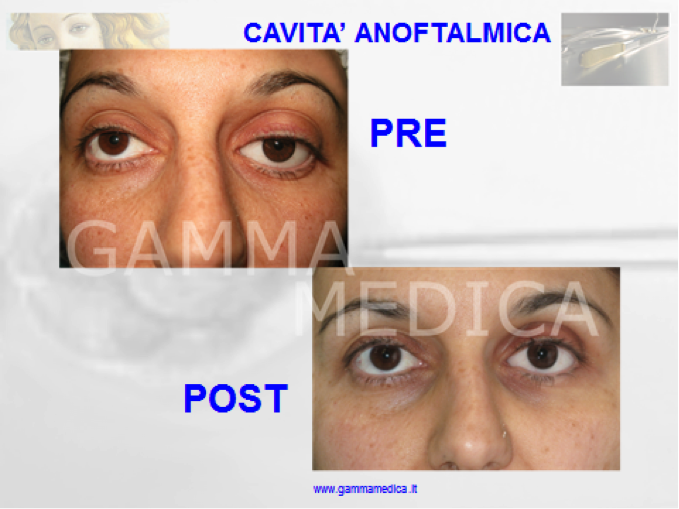

Interventi di asportazione del bulbo oculare e protesiPresso gli studi Gamma Medica di Roma e Salerno si eseguono interventi di eviscerazione, exenteratio orbitae, con impianto di idrossiapatite e/o innesto dermoadiposo-lipofilling. Tutti gli interventi vengono assistiti sia nella fase intra che post-operatoria da personale di ocularistica altamente specializzato. Negli ultimi anni ci sono stati notevoli sviluppi e perfezionamenti nella chirurgia della cavità anoftalmica sia nella fase di pianificazione di asportazione del contenuto dell’orbita sia nella fase di ricostruttiva. Come per altre procedure di microchirurgia oftalmica, l’asportazione di un occhio malato e non vedente, deve essere effettuata meticolosamente per ottenere il miglior risultato funzionale ed estetico e per evitare sequele che possano aggravare ulteriormente la già difficile condizione dei pazienti. La rimozione dell’occhio o del contenuto dell’orbita, è una delle decisioni più gravi e difficili di un paziente e del medico che deve eseguire questo intervento. Le patologie che determinano questo tipo di decisione sono spesso secondarie ad interventi chirurgici oculari od orbitari, traumi, infezioni o tumori. Molto spesso i pazienti a fronte di un intervento di asportazione del bulbo oculare necessitano di antidepressivi o di un ausilio psicologico. Asportazione del bulbo oculareEsistono vari tipi di intervento in relazione allo stato del bulbo oculare o alla causa che ne ha determinato la malattia e la cecità.
Sia nel caso di enucleazione, sia in quello di eviscerazione viene ricostituito il contenuto dell’orbita inserendo un impianto endoorbitario con biglie di idrossiapatite (materiale biocompatibile di sintesi molto poroso, facilmente colonizzabile e vascolarizzabile allo strato superficiale) o PMMA (polimetilmetacrilato). L’impianto primario, inserito nella sclera, va suturato ai quattro muscoli retti per trasmettere il movimento Pur essendo fondamentale per il risultato funzionale e cosmetico l’impianto può presentare dei problemi postoperatori quali esposizione o estrusione. Durata dell’intervento di eviscerazione
Più rara è l’eventualità di ricorrere all’exenteratio orbitae, ovvero di rimozione del globo e asportazione completa, o parziale, dei tessuti molli dell’orbita (muscoli extraoculari, grasso e tessuti connettivi). Di solito questo tipo di intervento viene utilizzato per tumori maligni dell’orbita. SCARICA IL CONSENSO INFORMATO DI EVISCERAZIONE > Durata dell’intervento di enucleazione
Gli obiettivi finali di questi interventi sono:
Oltre alla procedura chirurgica, l’oftalmologo spesso deve coordinare cure accessorie, come la radioterapia, una opportuna terapia sistemica antinfiammatoria / antidolorifica e una specifica riabilitazione protesica per l’impianto di una protesi personalizzata. Quest’ultima fase è gestita da un ocularista, tecnico specializzato nella costruzione, manutenzione ed impianto delle protesi oculari. SCARICA IL CONSENSO INFORMATO SOI > Interventi associati o secondari alle procedure di asportazione del bulbo oculareInnesto dermo-adiposo/Impianto SecondarioIntervento da preferire quando si è verificata più di una estrusione o fuoriuscita dell’impianto orbitario con problemi di tenuta dei tessuti. Il materiale dermo-adiposo (utilizzato come impianto secondario) è di norma prelevato dalla regione addominale o dal gluteo ed innestato nella cavità anoftalmica. Il limite di questo impianto sta nella riduzione del suo volume nei primi 6 – 12 mesi. LipofillingMetodica utilizzata per correggere le alterazioni orbitarie residue dopo innesto dermo-adiposo o impianto di idrossiapatite che manifestano un enoftalmo. È la tecnica scelta per la ricostruzione del solco orbito-palpebrale in pazienti portatori di protesi con enoftalmo secondario e per rivitalizzare la il tessuto cutaneo perioculare. I vantaggi di questa tecnica sono l’utilizzo di materiale di origine autologa e la presenza di cellule staminali al suo interno. In uno studio effettuato presso la Unità Operativa Complessa di Oftalmoplastica dell’Ospedale San Carlo di Nancy di Roma su 98 pazienti dal 2009 al 2012 si è rilevato che il riassorbimento del tessuto adiposo era ridotto al 20% rispetto ad altre tecniche che mostravano regressione del risultato fino al 60% dei casi trattati. Un ulteriore fattore stabilizzante del risultato è stata la associazione con fattori di crescita piastrinici. Fattori di crescita piastriniciLe piastrine contengono al loro interno dei granuli capaci di liberare sostanze ad azione rigenerante, che accelerano i processi di guarigione e sono in grado di attivare e stabilizzare le cellule staminali presenti nel grasso. I fattori di crescita piastrinici vengono ottenuti dal plasma ricco di piastrine dopo centrifugazione. I fattori di crescita i vengono iniettati nell’orbita, nel tessuto dermo-adiposo o nell’innesto da lipofilling, favorendo una maggior sopravvivenza del tessuto innestato ed una più veloce guarigione degli esiti chirurgici. Blefaroplastica ,cantopessia e correzione dela ptosiTecniche che permettono modificare la cute della regione perioculare eliminando le borse, la ptosi palpebrale e gli inestetismi che rendono asimmetrica l’apertura delle palpebre, dovuta anche alla variazione del contenuto dell’orbita. Chirurgia della palpebra inferioreNel caso di retrazione palpebrale inferiore o di lassità della palpebra inferiore, con impossibilità della completa chiusura dell’occhio, si procede al suo allungamento. Questo si ottiene con un rinforzo della cartilagine auricolare innestata quale supporto di tessuto. Consigli utili per l’intervento di asportazione del bulboIl paziente viene accolto dal personale infermieristico due ore prima dell’ intervento chirurgico presso la struttura sanitaria. È utile portare tutta la documentazione sanitaria e specificare i farmaci eventualmente utilizzati. Verrà eseguita una visita anestesiologica per pianificare il tipo di anestesia. È consigliabile indossare abbigliamento comodo, tipo tuta per la ginnastica, non indossare orologi e monili e rimuovere le eventuali lenti a contatto. Non si può bere o mangiare nulla nelle 6 ore antecedenti l’intervento, tranne i farmaci, dopo, sa seconda delle indicazioni dell’anestesista, sarà possibile alimentarsi ed idratarsi. Gli occhiali da sole possono contribuire a ridurre la fotofobia dopo l’intervento chirurgico. Evitare di bere alcolici per una settimana prima e dopo l’intervento chirurgico. Evitare qualsiasi trucco o creme occhi, creme idratanti, gel o prodotti coloranti per capelli, senza consultare previamente lo specialista. SCARICA IL CONSENSO INFORMATO SOI > Il Dott. Garzione è disponibile per valutare la necessità di interventi di asportazione del bulbo oculare. È possibile richiedere un appuntamento presso una delle nostre sedi ai seguenti contatti:
Sede di Roma +39 06 3728555 Sede di Salerno +39 0974.62397  |

{kind=link}